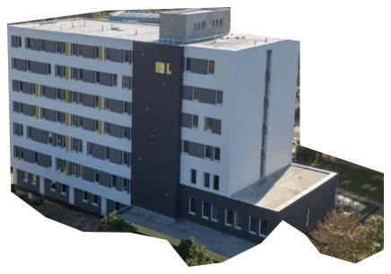
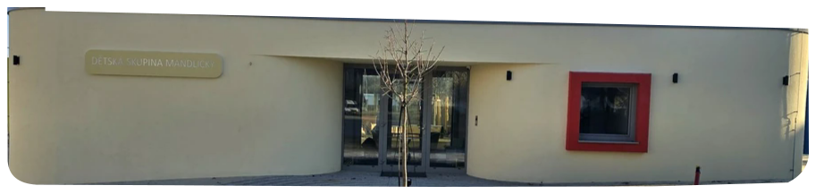
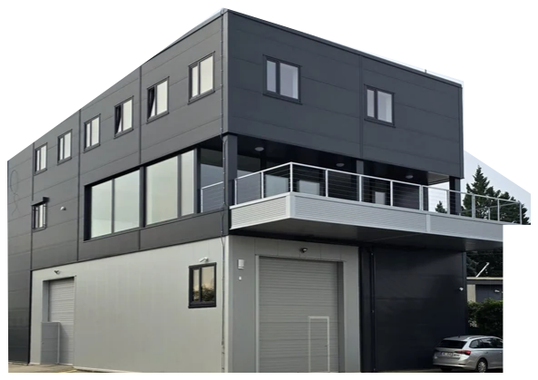
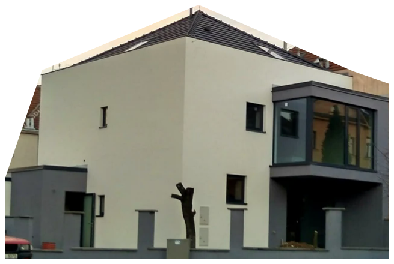
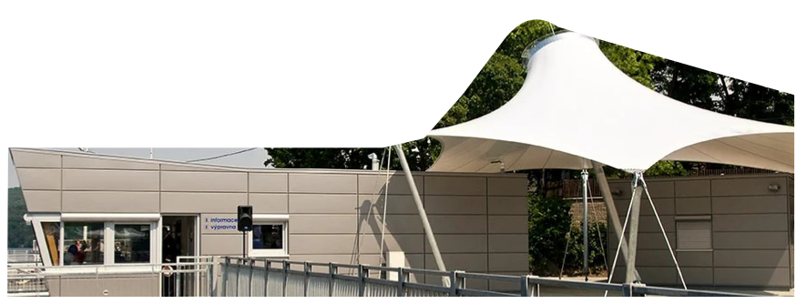
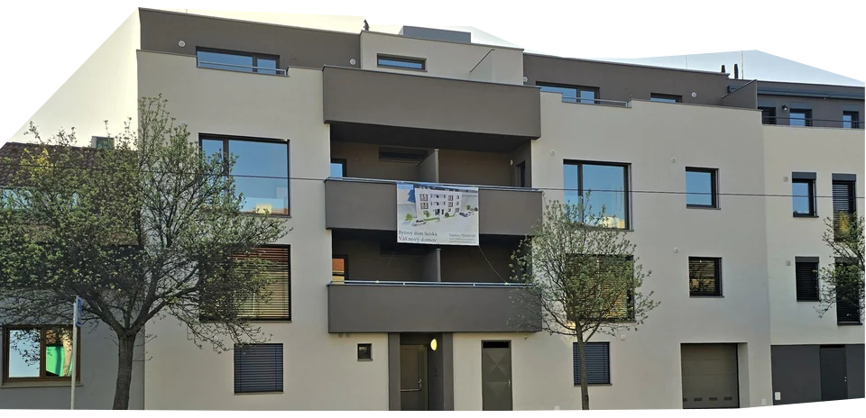
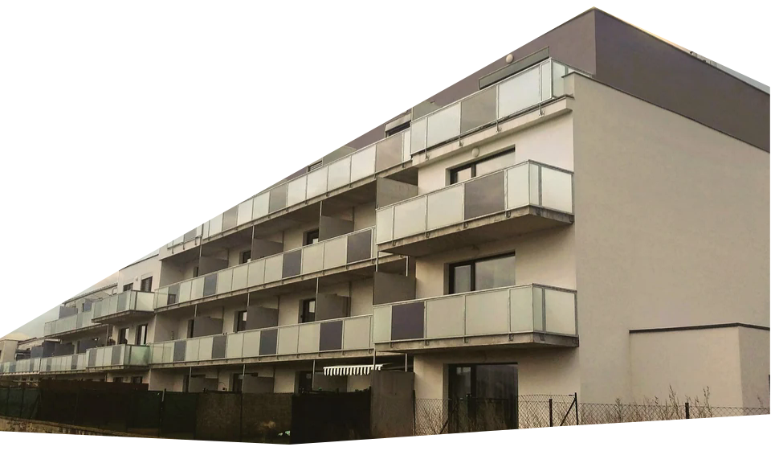
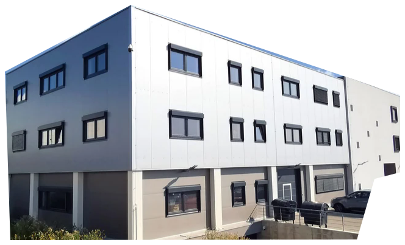

Koupelní 2 · Hodonín

Dětská skupina Hustopeče

Administrativní budova s halou HP Transped s.r.o.

RD Wurmova, Brno

Přístaviště Bystrc

BD Selská 84, Brno

KoDuS Ivančice

Vývojové centrum Veselý DS s.r.o.